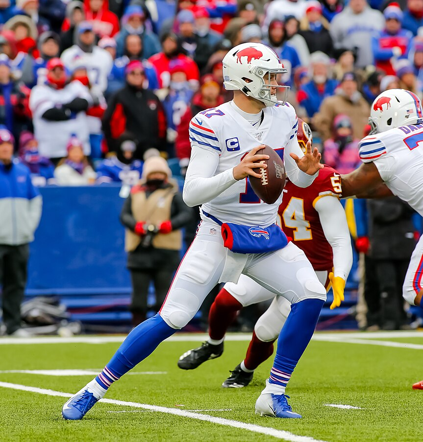

All rights go to NFL and the teams
The Philadelphia Eagles recently won their second Super Bowl in franchise history. They scored their first TD using the “Tush Push” or “Brotherly Shove”. In a "Tush Push", the quarterback after receiving the snap is pushed forward by players lined up behind him, typically a running back and a tight end. This is usually used in short yardage situations, such as on the goal line or trying to convert a fourth down play.
Why do Teams Want it Banned?
After a 22-10 wildcard loss to the Eagles, Packers CEO Mark Murphy wrote in his monthly column: "There is no skill involved. It is almost an automatic first down on plays of a yard or less." According to Fox Sports, the Eagles converted over 90% of their attempts in 2022, 83% in 2023 and 81.3% in 2024. Even further, per Jeff Kerr, the Eagles were 39-48 converting the "Tush Push" into a TD or first down, and of the 9 times they failed, they converted it the next play using the “Tush Push” 8 times. Basically, they were 47-48, or 97.9% on the “Tush Push” in the 2024 season.
Because of this, NFL teams want it banned. The formation is now under official NFL review, with all 32 teams deciding the future of the play at this week's owners meetings.
Bills HC Sean McDermott voiced player safety concerns over the controversial play at the NFL Combine. “The way that the techniques that are used with the play, to me, have been potentially contrary to the health and safety of the players. You have to go back through, in fairness, to the injury data on the play, but I just think the optics of it I'm not in love with."
Eagles HC Nick Sirianni was outspoken about the play at the NFL Combine, saying the Eagles have worked hard to perfect the push, which has never resulted in serious injury.
Stephen Jones confirmed his father, owner, and GM of the Dallas Cowboys Jerry Jones will vote to ban the “Tush Push”: "We’re looking for consistency as a committee, and we don’t allow pushing, We don’t allow the linebackers to push the defensive linemen on extra points and we’re just trying to be consistent."
Who Supports it?
However, not every team is against it. Jets HC Aaron Glenn, Texans GM Nick Caserio and HC Demeco Ryans, Ravens HC John Harbaugh, Browns HC Kevin Stefanski, and Patriots HC Mike Vrabel are reportedly all in support of the play.
Eagles HC Nick Sirianni said this on March 30: "We’ll see how it goes. All I will say about it is Jonathan Gannon, Shane Steichen and Kellen Moore better vote for it. They are in the head coach position right now because of that play.”
The Problem with Banning the Tush Push
CC BY-SA 4.0 Bryan Horstman
Packers CEO Mark Murphy argued the "Tush Push" is an automatic first down almost every time. This may be true for the Eagles, but for every other team in the league, it is false. The Buffalo Bills have 6’5”, 237 pound QB and MVP Josh Allen. The Bills only had a 78.4% success rate running the “Tush Push” in 2024.
The “Tush Push” requires skill, technique, and the right group of players to successfully and consistently execute it. Jalen Hurts can squat 600 pounds, and the Eagles have one of the best offensive lines in the league. And the results support this, as the Eagles have had at least an 80% success rate on the “Tush Push” in every season since 2022.
Texans GM Nick Caserio said it best: You don't want to penalize a team that's done something very well. Just because you can't stop the play, is that something you have to take out of the game?
Let us know what you think on our Twitter page, or send us an email!